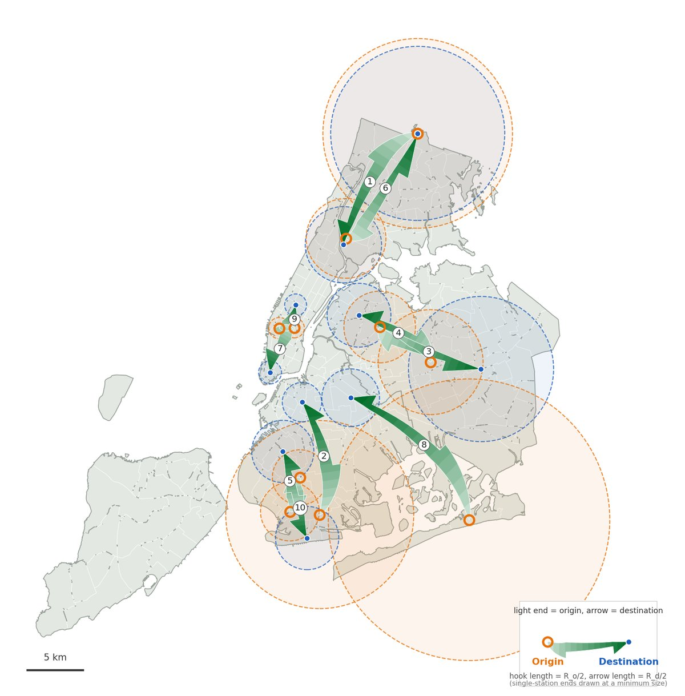
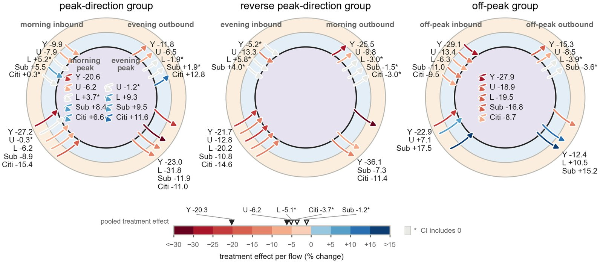

Luyang Han
MA in Statistics (Machine Learning track), Research Specialization
Columbia University · 2025 – 2027 (expected)
Bachelor of Science (Honours) in Financial Mathematics
University of Liverpool & Xi'an Jiaotong-Liverpool University · 2021 – 2025
Applying for PhD programs, Fall 2027
About
I am an MA student in Statistics at Columbia University. My research interest lies in extracting systematic structure from noisy, irregular transportation data, and in combining that structure with causal inference to draw insights that matter for real transportation policy. To pursue this direction, I am now deepening both the statistical foundations and the transportation domain knowledge it requires, and I am applying to PhD programs for Fall 2027.
Research Interests
Probabilistic Machine Learning for Origin–Destination (OD) Data·Causal Inference for Transportation Policy·Spatio-Temporal Mobility Modeling
News
- Sep 2026Paper on NYC congestion pricing accepted for presentation at the TRB 2027 Annual Meeting.
- Sep 2025Started the MA in Statistics (Machine Learning track, Research Specialization) at Columbia University.
- Jul 2025Graduated with First-Class Honours in Financial Mathematics from the University of Liverpool and Xi'an Jiaotong-Liverpool University.
Publication
Research


Detecting significant OD flow clusters across NYC's travel modes, from scan statistics to Bayesian models.


First-year causal effect of congestion pricing on five travel modes, estimated by difference-in-differences.
Minute-level, road-segment bus speeds across NYC from real-time vehicle location feeds.
Kernel-based specification tests for regression models, robust to parameter estimation.
Portfolio optimization controlling tail risk and skewness under heavy-tailed returns.
![[Poster]](files/SURF_Poster_LuyangHan.jpg){kind=link}